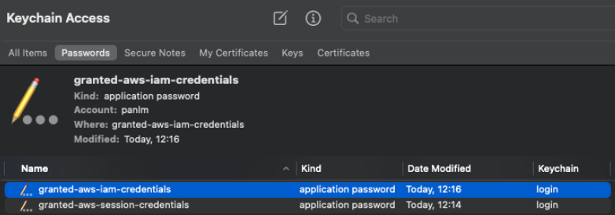

[!WARNING] This is a github note
assume-tool¶
create role for account to assume¶
echo ${WS_NAME:=$(TZ=EAT-8 date +%Y%m%d)}
ACCOUNT_ID=$(GRANTED_QUIET=true . assume panlm --exec "aws sts get-caller-identity" |jq -r '.Account')
LOCAL_ACCOUNT_ID=$(aws sts get-caller-identity |jq -r '.Account')
ROLE_NAME=panlm # easy for remeber and switch from WSParticipantRole
envsubst > /tmp/${ROLE_NAME}-trust.json <<-EOF
{
"Version": "2012-10-17",
"Statement": [
{
"Effect": "Allow",
"Principal": {
"AWS": [
"arn:aws:iam::${ACCOUNT_ID}:root",
"arn:aws:iam::${LOCAL_ACCOUNT_ID}:root"
]
},
"Action": "sts:AssumeRole",
"Condition": {}
}
]
}
EOF
aws iam create-role --role-name ${ROLE_NAME} \
--assume-role-policy-document file:///tmp/${ROLE_NAME}-trust.json \
--max-session-duration 43200 |tee /tmp/${ROLE_NAME}-role.json
aws iam attach-role-policy --role-name ${ROLE_NAME} \
--policy-arn "arn:aws:iam::aws:policy/AdministratorAccess"
ROLE_ARN=$(cat /tmp/${ROLE_NAME}-role.json |jq -r '.Role.Arn')
CREDENTIAL_ENTITY_NAME="0-ws-${WS_NAME}"
envsubst >> ~/.aws/config <<-EOF
[profile $CREDENTIAL_ENTITY_NAME]
role_arn=${ROLE_ARN}
source_profile=panlm
role_session_name=granted
region=us-east-2
EOF
echo ${CREDENTIAL_ENTITY_NAME}
^0de4c9
modify role for account to assume-¶
- (deprecated due to new SCP policy do not allow to modify WSParticipantRole’s trust policy)
- login from macbook CLI
- modify existed role for login - WSParticipantRole
- create aws credential entities
assume panlm
echo ${AWS_ACCESS_KEY_ID}
echo ${AWS_SECRET_ACCESS_KEY}
echo ${AWS_SESSION_TOKEN}
aws sts get-caller-identity
echo ${WS_NAME:=$(TZ=EAT-8 date +%Y%m%d)}
ACCOUNT_ID=$(GRANTED_QUIET=true . assume panlm --exec "aws sts get-caller-identity" |jq -r '.Account')
ROLE_NAME="WSParticipantRole"
TEMP=$(mktemp)
aws iam get-role --role-name ${ROLE_NAME} --output json > ${TEMP}.1
cat ${TEMP}.1 |jq '.Role.AssumeRolePolicyDocument.Statement[0].Principal.AWS += ["arn:aws:iam::'"${ACCOUNT_ID}"':root"]' |jq -r '.Role.AssumeRolePolicyDocument' |tee ${TEMP}.2
aws iam update-assume-role-policy --role-name ${ROLE_NAME} \
--policy-document file://${TEMP}.2
aws iam attach-role-policy --role-name ${ROLE_NAME} \
--policy-arn "arn:aws:iam::aws:policy/AdministratorAccess"
ROLE_ARN=$(cat ${TEMP}.1 |jq -r '.Role.Arn')
CREDENTIAL_ENTITY_NAME="0-ws-${WS_NAME}"
echo '['"$CREDENTIAL_ENTITY_NAME"']' >> ~/.aws/credentials
echo 'role_arn='${ROLE_ARN} >> ~/.aws/credentials
echo 'source_profile=panlm' >> ~/.aws/credentials
echo 'role_session_name=granted' >> ~/.aws/credentials
echo 'region=us-east-2' >> ~/.aws/credentials
echo ''
echo ${CREDENTIAL_ENTITY_NAME}
^b98085
install¶
import existed credentials to mac login keychain¶

export to aws credentials file¶
- This command can be used to return your credentials to the original insecure plaintext format in the AWS credentials file.
refer¶
Last update:
2023-11-10
Created: 2023-09-17
Created: 2023-09-17